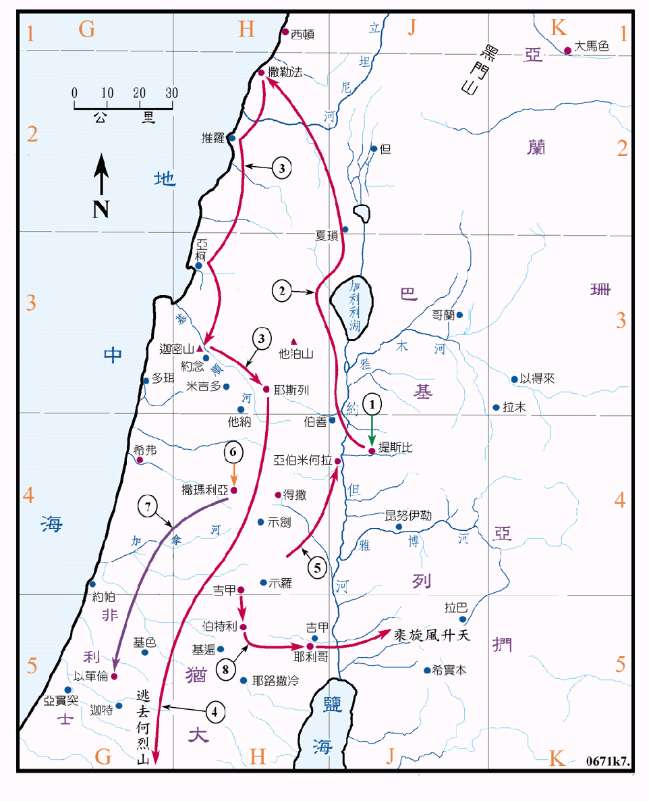

875～850BC

行动线说明
| 序号 | 圣经 | 说明 |
|---|---|---|
| 1. | 王上17:1-7 | 以利亚对亚哈王说，这几年我若不祷告，必不降雨露，然后他就逃到基立溪旁躲藏，就有乌鸦来供养他，直到溪水乾了。 |
| 2. | 王上17:8-24 | 神再令他去撒勒法，在那里有一个穷寡妇供养他，寡妇的儿子病死了，以利亚使他又活了过来。 |
| 3. | 王上18章 | 以利亚在迦密山求雨成功，就杀了四百五十个巴力的先知。然后跑去耶斯列城。 |
| 4. | 王上19:1-16 | 耶洗别要杀以利亚，以利亚就逃到别是巴，又逃到何烈山。在何烈山，神指示他要膏哈薛作亚兰王，耶户作以色列王，亚伯米何拉人以利沙作先知接续以利亚的工作。 |
| 5. | 王上19:19-21 | 以利亚膏以利沙作先知，收他为门徒，接续他的工作。 |
| 6. | 王上21:17 | 以利亚到撒玛利亚去责备亚哈王杀害拿伯，夺了他的葡萄园。 |
| 7. | 王下1:1-17 | 亚哈谢病了，就差人去求问以革伦的神巴力西卜，以利亚在半路上阻拦，警告他们，并去见王，宣告王必死在床上。 |
| 8. | 王下2:1-13 | 以利亚和他的门徒以利沙从吉甲经伯特利、耶利哥到约但河东，他乘旋风升天。 |
以利亚是北国的先知，他共事奉了廿五年之久，历经了亚哈、亚哈谢和约兰等三个王，他有烈火先知的美名，因他在迦密山求耶和华降烈火烧了燔祭，又在乘旋风升天时有火车火马。在圣经中只有以诺和以利亚两人是未经过死而被神接去的。耶稣和门徒在山上祷告时，只有摩西和以利亚两个人显现和耶稣说话。所以以利亚是被神很重视的一位先知。